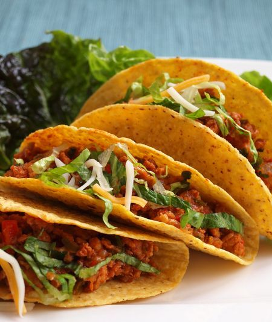

Tacos Recipe

Description
Making taco seasoning from scratch is super easy and can be
cheaper than buying the prepared taco seasoning.
Here are the spices I include in my recipe. Feel free to also add paprika,
coriander, onion powder and crushed red pepper to give it some heat.
Ingredient
- Chili powder
- Cumin
- Garlic powder
- Mexican oregano
- Salt and pepper
Steps
- Place the ground beef in a skillet with olive oil
- Brown the beef with olive oil
- Add the spices along with the tomato paste and water
- Bring the mixture to a simmer and then cook for a few more minutes
until the sauce thickens.